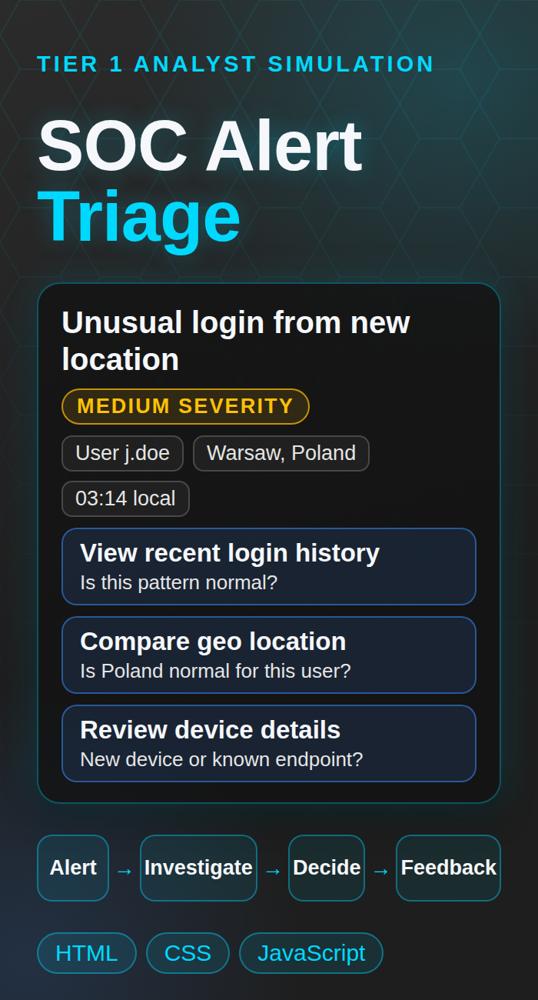

SOC Analyst Labs


SOC Alert Triage Demo
Case Study
Overview / What I Built
I built this in the browser to practice thinking like a Tier 1 SOC analyst. You get one alert, an unusual login for a user called j.doe from Warsaw, Poland at 3:14 in the morning. You look at the evidence, decide what to do, and get feedback on your choice. All of the data in it is made up.
- One alert scenario with a user, source IP, location, time, and device
- Four actions on the left: view recent login history, compare the geo location, review the device and browser details, or close the alert as benign
- An investigation log that fills in as you take each step
- Three final decisions: escalate to Incident Response, force a password reset and keep monitoring, or close it as benign
- Feedback on each decision that explains whether it was a good call, a reasonable one, or a risky one
- A button to run the scenario again
Try It Live
This runs in your browser, so there is nothing to install.
Play the SOC Alert Triage demo. Check the login history, the location, and the device before you decide. Then try a different decision to see how the feedback changes.
Open the Live DemoBuild Notes and Links
What I remember about building it
This was one of my first projects, so most of my time went into errors and broken code. I kept getting the syntax wrong and putting strings in the wrong place, and I had to fix it one error at a time until it worked. Honey-AI, the newest project on this site, is a better picture of where my skills are now.